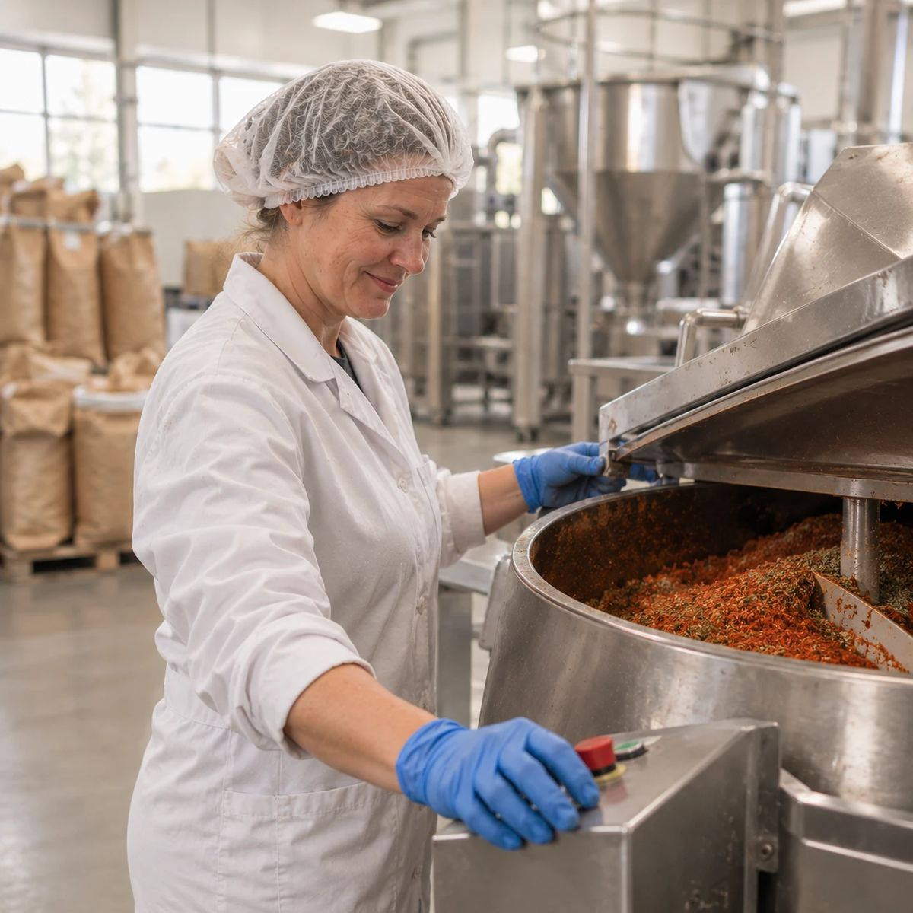
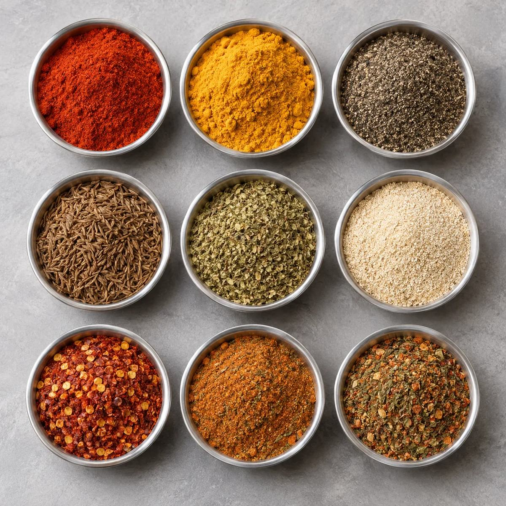
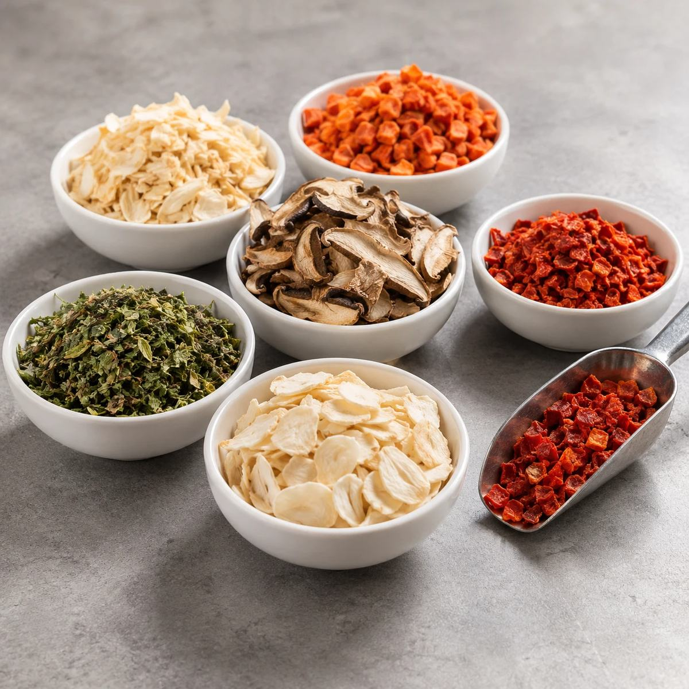
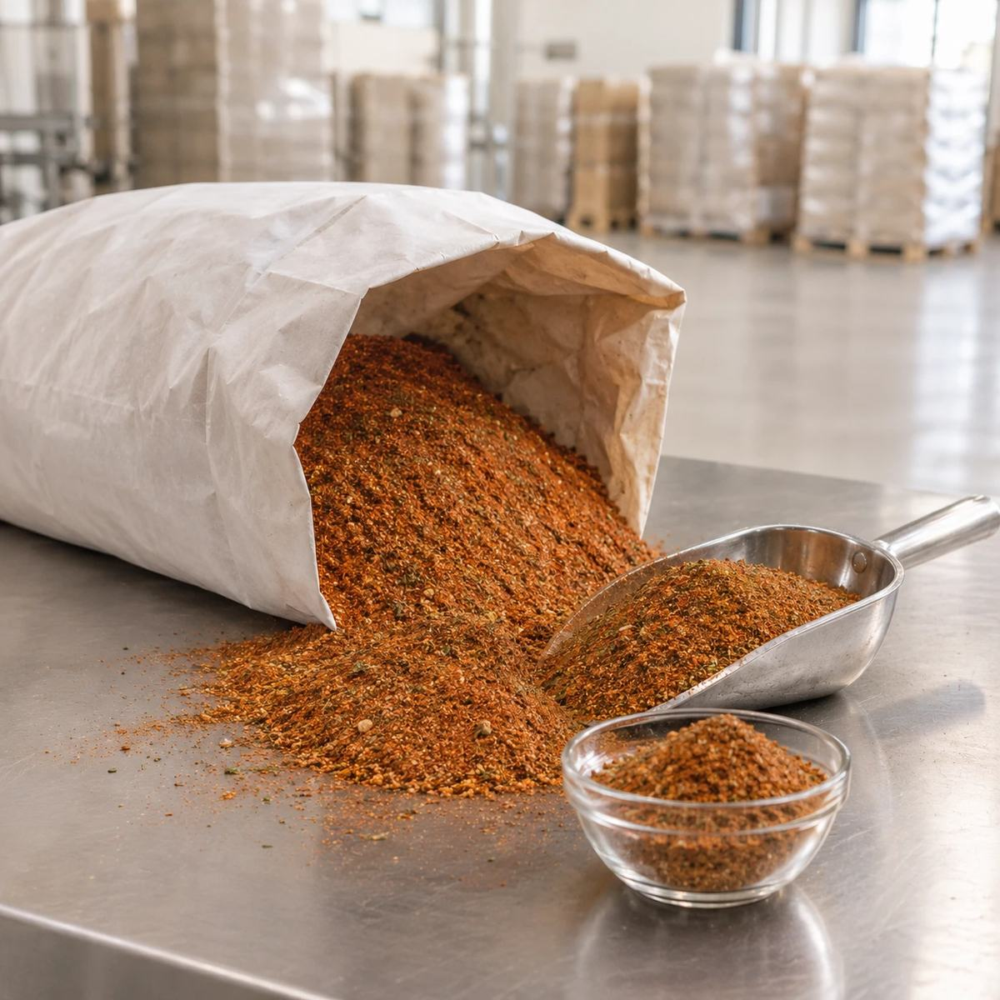
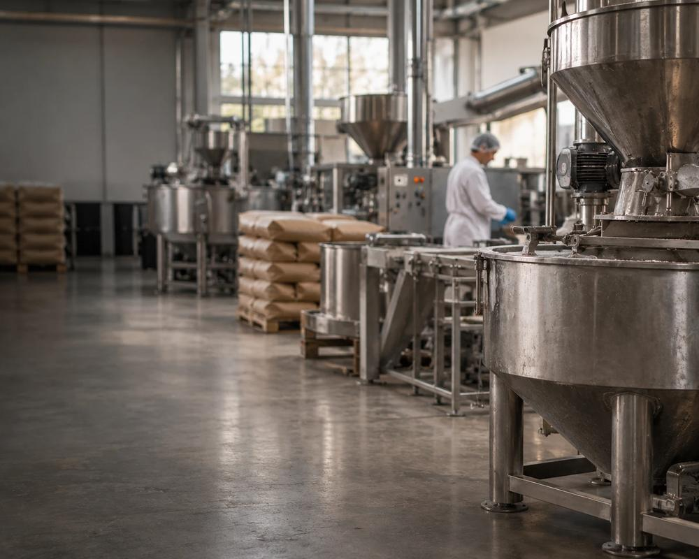
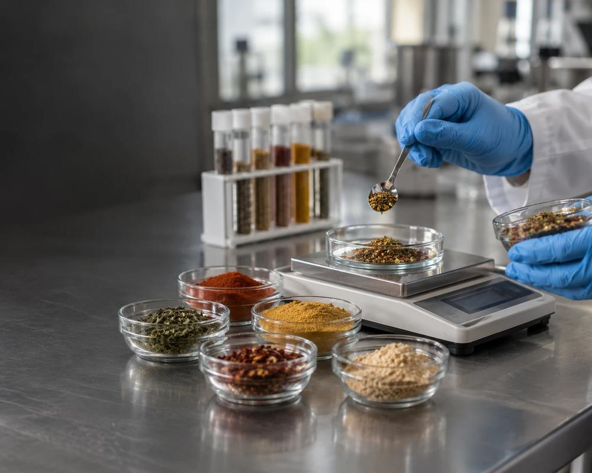
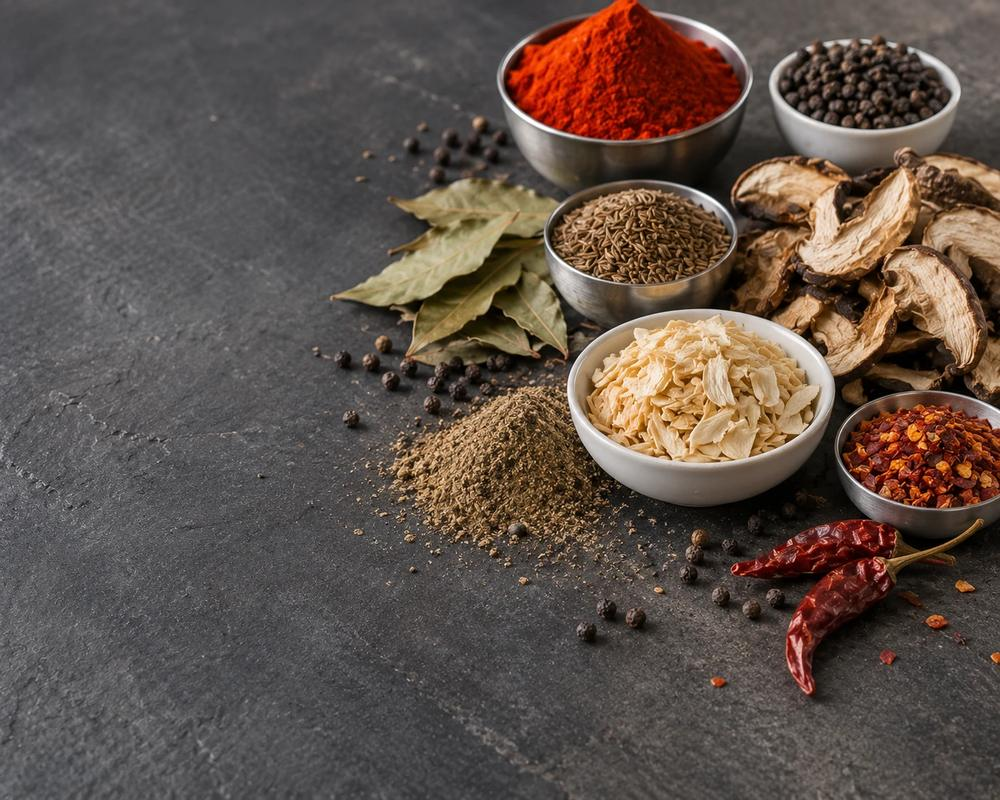

Dáváme jídlu chuť. Od roku 1996.
Vyvíjíme. Vyrábíme. Dodáváme.
Potraviny a ingredience od receptury po sériovou výrobu. Koření, kořenicí směsi a dehydratované potraviny z vlastní výroby ve Větřkovicích pro potravinářský průmysl, gastro i retail.




Co děláme

Průmysl
Ingredience, směsi a technologická řešení pro potravinářskou výrobu.

Vývoj na míru
Od nápadu přes recepturu, testování a optimalizaci až po výrobu.

Vlastní produkty
Koření, směsi, dehydratované potraviny a hotová jídla pro retail i gastro.
- 1996Tradice a zkušenosti od roku 1996
- 100+Profesionálů, kteří rozumí surovinám i výrobě
- 30 000+ tVýrobní kapacita ročně
- ISO, IFSCertifikovaná kvalita a bezpečnost
Seznamte se s námi
Otevřít na YouTubeDodáváme tam, kde se vaří ve velkém
Obchodní zástupci ve všech krajích, vlastní doprava a směsi připravené přesně pro vaši výrobu.
Čtyři způsoby, jak s námi spolupracovat
Obchodní zástupce ve vašem kraji
Naši zástupci působí ve všech regionech Česka a zásobují školy, školky, nemocnice, domovy pro seniory i restaurace. Zboží dovezeme vlastní dopravou do 5 pracovních dnů.
Najít zástupceSpecialisté pro potravinářský průmysl
Vývoj směsí, aplikace koření a dehydratovaných surovin do výroby a veškerá technická i administrativní podpora.
Vývoj na míruE-shop pro domácnosti
Koření, směsi, sušené houby a další výrobky v menších baleních objednáte pohodlně online.
Do e-shopuOsobní odběr ve Větřkovicích
Preferujete osobní kontakt? Navštivte nás – probereme vaše potřeby a připravíme zboží k okamžitému odběru.
Jak k nám
Směs přesně pro vaši výrobu
Máte vlastní recepturu nebo hledáte novou chuť? Vyvineme ji s vámi a vyrobíme ve Větřkovicích.
Zadání
Popíšete výrobek, technologii a chuť, kterou hledáte.
Vývoj vzorku
Naši technologové připraví směs podle vašeho zadání.
Zkouška u vás
Vzorek vyzkoušíte přímo ve své výrobě a doladíme ho.
Pravidelné dodávky
Vyrábíme a vozíme vlastní dopravou do 5 pracovních dnů.
Přes 490 výrobků
O nás
„Od samého počátku založení společnosti mám jasnou představu o tom, jaká naše společnost má být v současnosti i v budoucnu.“
- 1996
Jaroslav Kostera zakládá firmu a vyrábí koření podle vlastních receptur.
- 2001
Vzniká společnost Jaroslav Kostera, J.K.FOOD s.r.o.
- [rok]
[Doplnit milník, např. nový výrobní závod ve Větřkovicích.]
- Dnes
Přes 100 zaměstnanců a odběratelé po celé České republice i v zahraničí.
Naše koření i pro vaši kuchyň
Jednodruhové koření, směsi, sušené houby a další výrobky v baleních pro domácnost objednáte v našem e-shopu.
Nakoupit v e-shopuDůvěřují nám
Naše koření a směsi používají výrobci, jídelny i restaurace po celé České republice.
Časté dotazy
Nenašli jste odpověď? Napište nám nebo zavolejte na +420 556 310 205.
Komu dodáváte?
Výrobcům masných, pekárenských a mlékárenských výrobků, školním a nemocničním jídelnám, domovům pro seniory, restauracím a cateringu. Pro domácnosti máme e-shop s menšími baleními.
Umíte vyvinout směs podle naší receptury?
Ano. Popíšete výrobek, technologii a chuť, kterou hledáte, naši technologové připraví vzorek, vyzkoušíte ho přímo ve své výrobě a doladíme ho. Pak směs vyrábíme a dodáváme pravidelně.
Můžete směs navážit přímo na naši výrobní dávku?
Ano. Po dohodě namícháme směsi koření, škroby i technologické přípravky přímo na vaši kutrovací či výrobní dávku. Odpadá vážení surovin, výrobek je pokaždé stejný a pracoviště se nepráší.
Jak rychle dodáváte?
Zboží vozíme vlastní dopravou, případně kurýrní službou, obvykle do 5 pracovních dnů od objednávky.
V jakých baleních výrobky dodáváte?
Balení i hmotnost se dají dohodnout podle vaší spotřeby – například v PE nebo papírových pytlích. Na každém balení je uvedena šarže, na přání ho opatříme i EAN kódem. Menší balení pro domácnost najdete v e-shopu.
Pošlete nám vzorky?
Ano. Napište nám v poptávce, o které výrobky máte zájem, a vzorky vám připravíme.
Dodáváte k směsím i technologické postupy?
Ano, ke kombi směsím pro masnou výrobu dodáváme technologické postupy a rádi poradíme i při zavádění nového výrobku.
Můžu si zboží vyzvednout osobně?
Ano, po domluvě si zboží můžete vyzvednout přímo u nás ve Větřkovicích 243. Připravíme ho k okamžitému odběru.
Dodáváte i do zahraničí?
Ano, máme odběratele i v zahraničí. Napište nám – komunikujeme i v angličtině.
Napište nám
Připravíme nabídku, pošleme vzorky nebo navrhneme směs na míru.
Jaroslav Kostera, J.K.FOOD s.r.o.Větřkovice 243, 747 43 Větřkovice
- Jana Galčanováobchodní ředitel – nabídky a spolupráce+420 777 340 321jana.galcanova@kostera.cz
- Bc. Jakub Kosteravedoucí výroby – směsi na míru, technologie+420 777 340 382jakub@kostera.cz
- Jaroslav Kosteramajitel+420 777 340 304jaroslav@kostera.cz
Děkujeme, poptávka odešla.
Ozveme se vám co nejdříve, obvykle do jednoho pracovního dne. Potvrzení jsme poslali na váš e-mail.